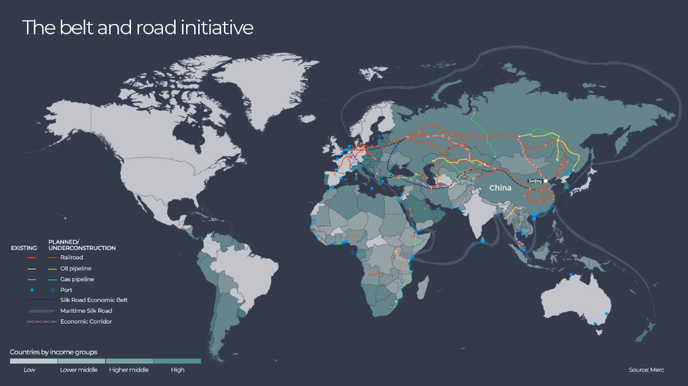
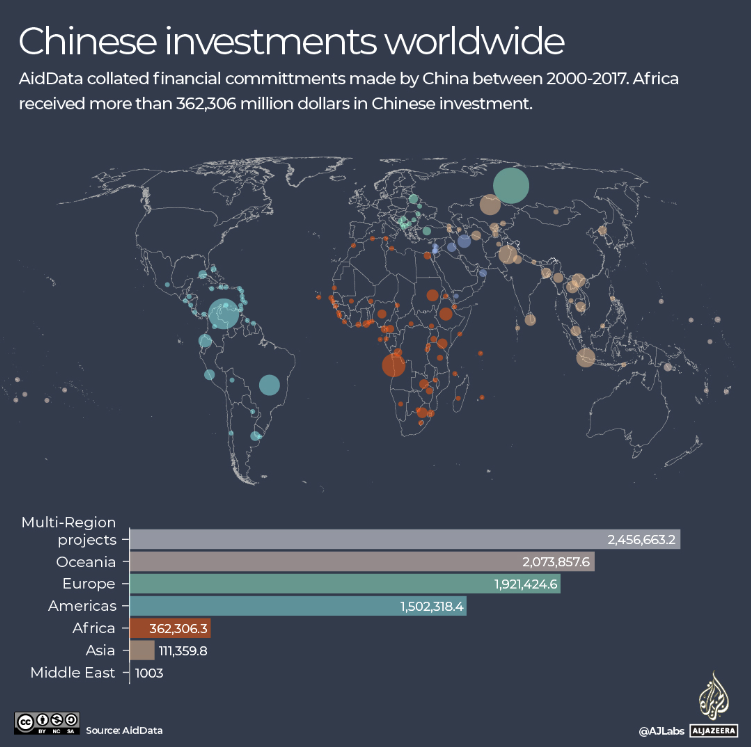

China has committed more than $200-billion to African countries in the past two decades, some of it as official development assistance (ODA), and much of it in the form of loans to finance massive multi-million-dollar infrastructure projects which form part of a global network of transport, energy, and telecommunications infrastructure known as the Belt and Road Initiative.
We used a data set compiled by AidData, an international development research lab based at William & Mary University in the United States, to explore which countries have received loans or grants from China. We map some of the major infrastructure projects the money has been spent on and zoom in on key projects in Angola, Equatorial Guinea, Nigeria, Algeria, Kenya and South Africa.

The Belt and Road Initiative (BRI) is a global network of ports, roads, railway lines and pipelines, as well as energy and communications infrastructure that spans Asia, Europe, Africa and South America.
These facilities have been described as the “circulatory system of the world along which goods and people flow”.
One-hundred-and-forty-six countries, 49 of them in Africa, have joined the BRI by signing a memorandum of understanding with China.
Through the BRI China also aims to have countries “open their markets to China and facilitate trade, to link their financial markets to China’s, to strengthen societal (“people-to-people”) relations, and even align their overall economic development policies with China’s”, says the Mercator Institute for China Studies.
China’s focus on infrastructure projects differs from the traditional development spending of “Western” countries, which tends to focus on reforming policies and institutions, says AidData.
The financing usually takes the form of loans rather than aid, and “collateralisation is the linchpin of China’s high-risk, high-reward credit allocation strategy”, AidData adds. For example, in a resource-rich country such as Angola, loans will often be linked to oil sales.

Belt and Road Initiative projects are not centrally reported and China does not disclose the terms of their loans. However, AidData has collected information about more than 13,000 Chinese financial commitments around the world – 5,000 of them are in African countries.
China has invested the most money in Russia, $125.4-billion, followed by Venezuela, R91-billion, then Angola, $52,7-billion. All three are rich in oil.
Asian countries have received the largest share of China’s spending ($245.7-billion) and Africa has received the second highest amount ($207.4-billion).
In Africa, Angola has received 25% of the amount China has spent in the whole continent, according to AidData’s research.
The four main areas of investment in Africa are: energy; transport and storage; industry, mining and construction; and communications
In the energy sector, China has committed billions of dollars to oil and gas projects, as well as 47 hydro power projects, 7 coal, 6 gas and 3 oil power plants, plus and 9 renewable energy projects.
It has also spent billions on the construction or rehabilitation of 27 airports, 21 ports, 14 railway projects and thousands of kilometres of roads.
It has invested in copper and cobalt mines in the Democratic Republic of Congo, gold mines in Eritrea, uranium mines in Namibia and Niger, an iron mine in Sierra Leone, a platinum mine in South Africa and a chromium mine in Zimbabwe.
It has financed many telecommunications networks all over the continent.
It has also financed the building or rehabilitation of 62 sports stadiums, an opera house and four theatres, as well as schools, government buildings, electrification and water supply projects, among many other things.
Chinese companies are also usually involved in the construction of these infrastructure projects.
The map below shows 230 infrastructure projects in 46 countries that China has committed to finance between 2000 and 2017. The map does not include road projects of which thousands of kilometres have been constructed or rehabilitated, but it does include: